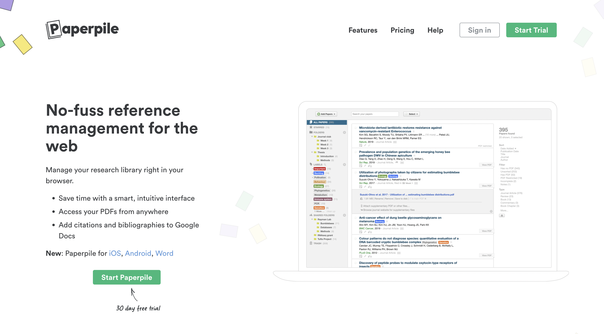
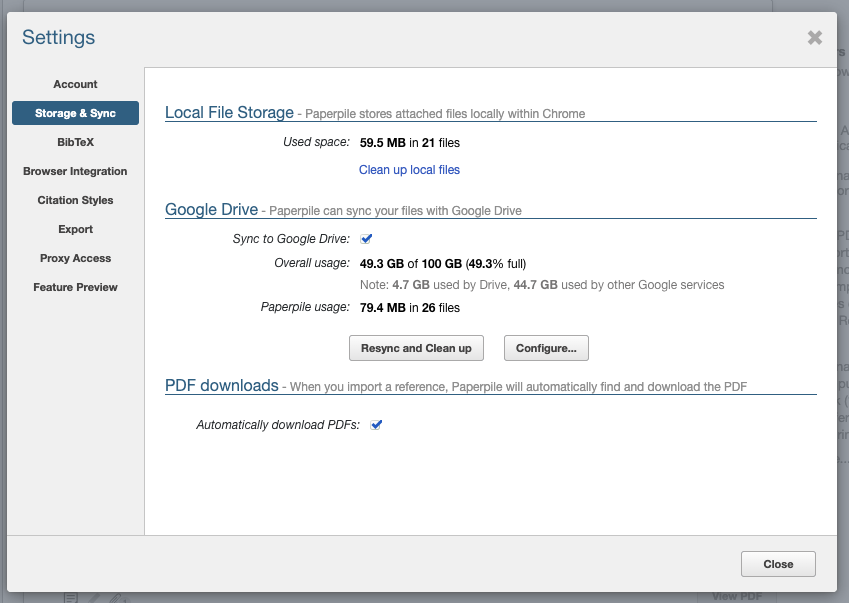

Paperpile is an online PDF manager that stores your personal data in your Google Drive folder.
I recenlty found out about it and discovered that it addresses the biggest issue I had with most of its competitors: the vendor lock-in problem.

I recently started working on a new topic, collecting and organising academic papers to build a conceptual map of the area. So I began looking for a piece of software that could help with that task.
This problem is not new to me. In the past I've used a lot Mendeley, for this task, as well as its competitors Readcube and Papers. Frustrated by the lack of portability of these solutions, I even tried to roll out my own minimalist Python-based tool to search & index PDFs in combination with Apple's Preview PDF editor.
Paperpile stands out among its commercial competitors for one simple fact: there is no vendor lock-in. Your PDF library syncs directly to your Google Drive hence you can access your papers and annotations without limitations using any other software of choice.

My old Mendeley PDF collection slowly got out of sync with the backup copy I kept on my hard drive. New papers have been added locally, others got deleted or modified using other tools. I tried to import everything into it, and I tried moving to another PDF manager too, but I quickly realised that's a painful operation. Older annotations would be lost, new ones were going to be locked away in a proprietary reference manager database.
What a drag. This is the classic vendor lock-in effect, for PDF managers, I thought:
Both aspects are pretty annoying. Hours of work go into reading papers and annotating them. So you don't want to discover after a few years that your hard work is behind a paywall, or, even worse, it's lost forever cause the app you were using is no longer in commerce.
Then recenlty I ran into Paperpile, an app founded in 2012 by three computational biologists. It costs 25$ a year, so it's not free like some of its competitors but admittedly it's not much either.
The best features Paperpile has, from my point of view:
After about 3 months of regular use, I'm very happy about it. The iOS app is simple-yet-functional so I couldn't be asking for more. PDFs syncing with Drive works smoothly and on many occasions I simply pulled some PDFs from there without accessing the software.
So it's a thumbs up from me to the Paperpile team - keep up the good work!
Cite this blog post:
2022
International Conference on Science, Technology and Innovation Indicators (STI 2022), Granada, Sep 2022.
2021
2019
2017
paper Data integration and disintegration: Managing Springer Nature SciGraph with SHACL and OWL
Industry Track, International Semantic Web Conference (ISWC-17), Vienna, Austria, Oct 2017.
paper Fitting Personal Interpretation with the Semantic Web: lessons learned from Pliny
Digital Humanities Quarterly, Jan 2017. Volume 11 Number 1
2015
2013
paper Fitting Personal Interpretations with the Semantic Web
Digital Humanities 2013, University of Nebraska–Lincoln, Jul 2013.
2012
2011
2010
2009
2007
paper AquaLog: An ontology-driven question answering system for organizational semantic intranets
Journal of Web Semantics, Sep 2007. Vol. 5, 2, (72-105), Elsevier
paper PhiloSURFical: browse Wittgensteinʼs Tractatus with the Semantic Web
Wittgenstein and the Philosophy of Information - Proceedings of the 30th International Ludwig Wittgenstein Symposium, Kirchberg, Austria, Aug 2007. pp. 319-335